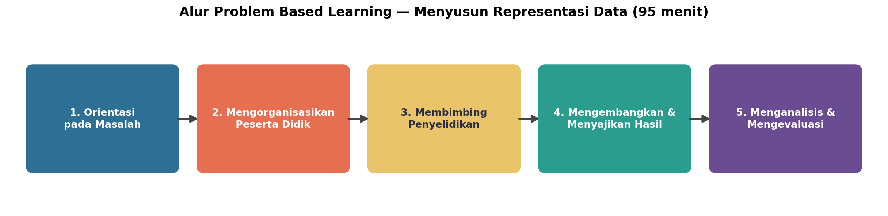
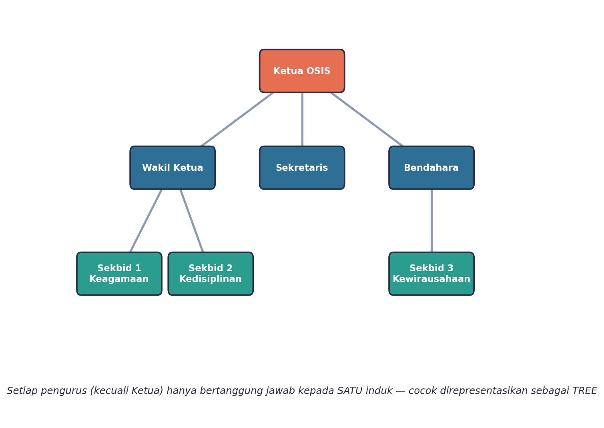
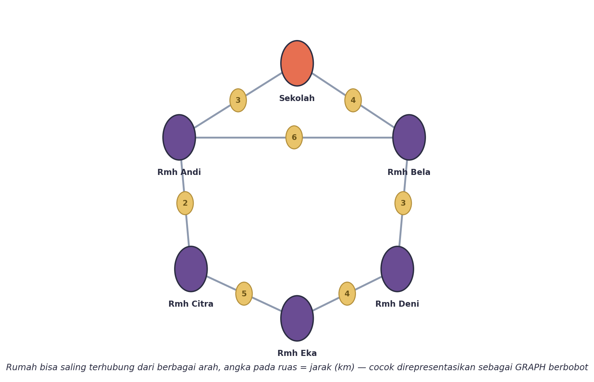
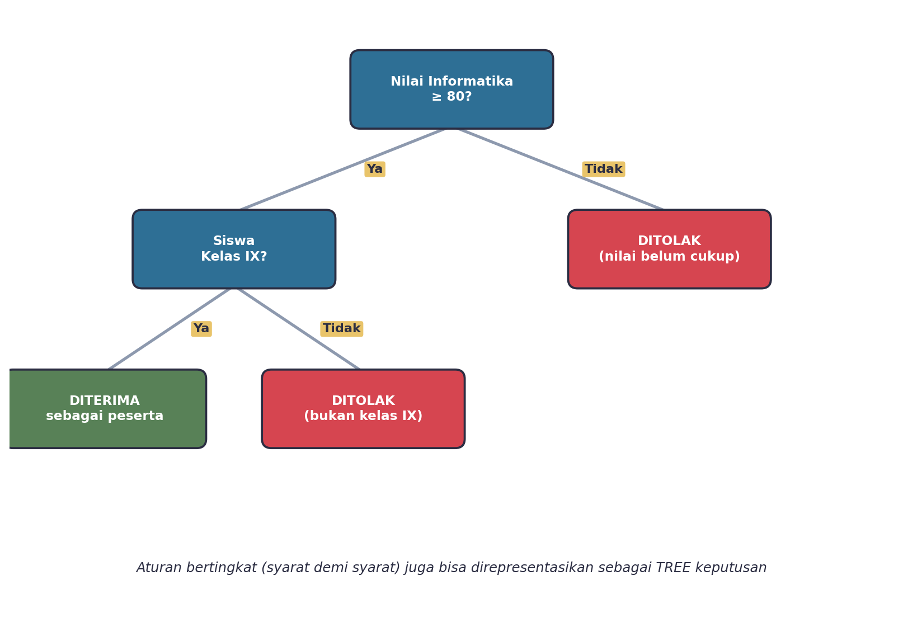
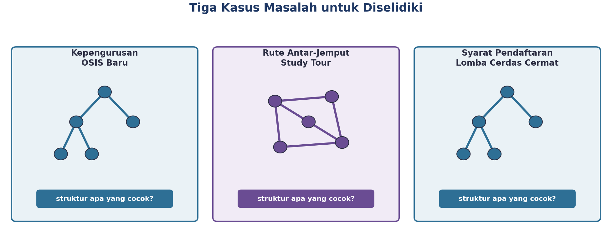
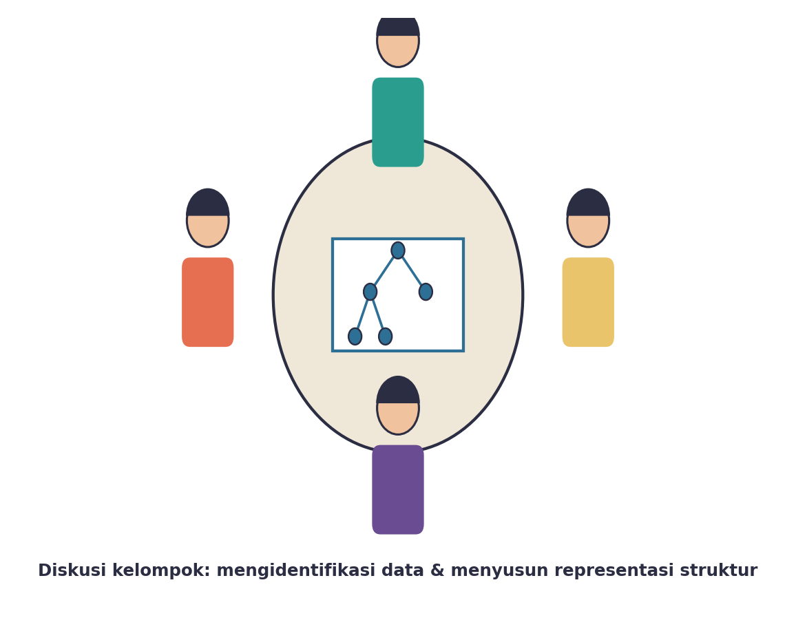
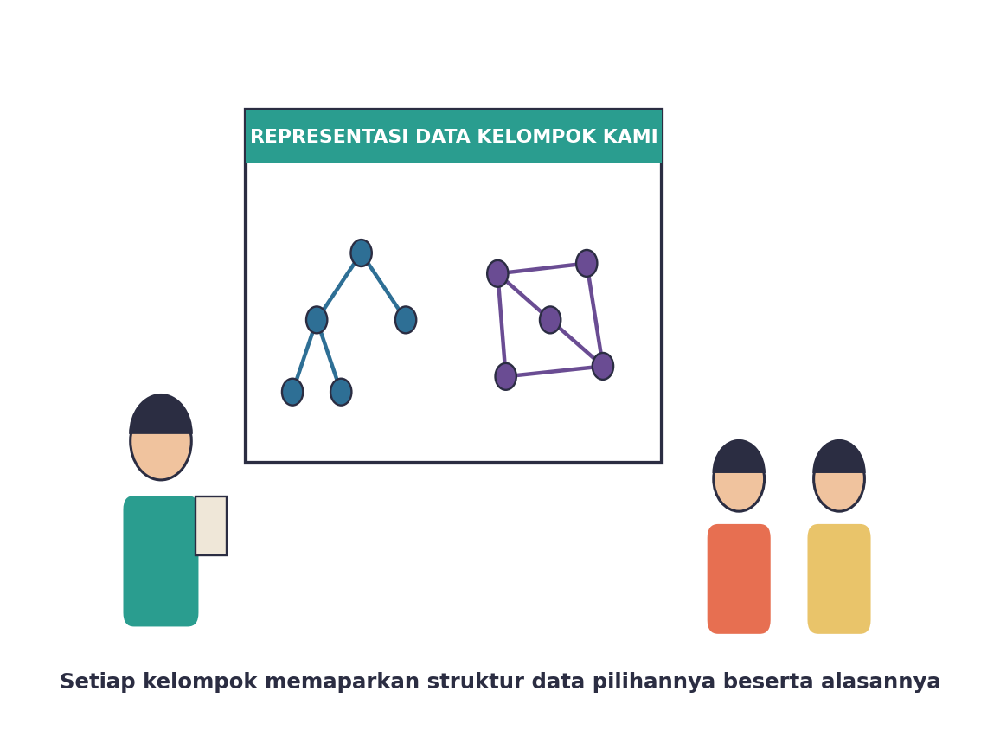

Yuk, Intip Apa yang Bakal Kamu Kuasai Hari Ini
Setelah pertemuan ini, kamu bakal bisa:
- mengidentifikasi kebutuhan data dari sebuah masalah sederhana;
- menyusun representasi data dalam bentuk tree atau graph yang sesuai dengan masalah tersebut;
- menjelaskan contoh penerapan tree dan graph untuk menyelesaikan masalah sehari-hari.
Kata Kunci
Emang Kenapa Sih Masalah Perlu “Direpresentasikan”?
Bayangin kamu jadi ketua panitia study tour sekolah. Ada puluhan siswa yang harus dijemput dari berbagai titik, ada rute yang harus ditentukan, dan ada aturan siapa boleh ikut siapa nggak. Kalau semua informasi itu cuma ada di kepalamu atau dicatat acak-acakan di kertas, gampang banget bikin salah rencana.
Di sinilah pentingnya menyusun representasi data — mengubah masalah dunia nyata yang rumit menjadi struktur data (tree atau graph) yang jelas dan mudah dianalisis. Begitu masalahnya sudah “digambar” dalam bentuk struktur yang tepat, jauh lebih gampang buat kita — atau bahkan komputer — mencari solusinya.
Nah, hari ini kamu nggak cuma belajar teori. Kamu akan langsung dihadapkan pada masalah-masalah nyata dan menyusun sendiri representasi datanya, lewat model belajar Problem Based Learning (PBL) — belajar dengan cara memecahkan masalah beneran.
Inget lagi ciri tree (hierarkis, satu elemen cuma punya satu “induk”, nggak ada jalur muter balik) dan graph (jejaring bebas, bisa banyak koneksi, bisa ada siklus, dan bisa punya “bobot” seperti jarak). Dua ciri ini bakal jadi kunci utama hari ini buat mutusin, sebuah masalah itu cocoknya direpresentasikan pakai tree atau graph.
Kenalan Sama Alur Belajar Hari Ini
Hari ini kelasmu akan melewati lima tahap Problem Based Learning — mulai dari dikasih masalah nyata, berdiskusi kelompok, menyusun representasi data, sampai memamerkan dan mengevaluasi hasil kerja kelompok.

Tiga Langkah Jitu Menyusun Representasi Data
Setiap kali kamu ketemu masalah yang butuh direpresentasikan jadi struktur data, ada tiga langkah simpel yang bisa kamu pakai. Langkah ini yang bakal kamu praktikkan terus sepanjang pertemuan hari ini.
| Langkah | Yang Kamu Lakukan |
|---|---|
| 1. Identifikasi Data | Cari tahu elemen-elemen apa saja yang terlibat dan bagaimana hubungan antar-elemen itu (searah/hierarkis, atau bebas/berjejaring). |
| 2. Pilih Struktur | Tentukan: apakah hubungannya cocok jadi tree (kalau hierarkis, satu induk) atau graph (kalau jejaring bebas, bisa ada siklus dan bobot)? |
| 3. Gambar Representasi | Tuangkan hasil identifikasi ke dalam diagram tree atau graph yang jelas, lengkap dengan label tiap elemen. |
Tanyakan ini ke dirimu sendiri: “Apakah tiap elemen di masalah ini cuma punya SATU hubungan ke atas, atau bisa punya BANYAK koneksi sekaligus?” Kalau cuma satu — itu tree. Kalau bisa banyak dan bahkan bisa muter balik — itu graph.
Contoh #1: Nyusun Struktur Kepengurusan OSIS
Misalnya sekolahmu baru saja membentuk kepengurusan OSIS baru. Ada Ketua OSIS, lalu di bawahnya ada Wakil Ketua, Sekretaris, dan Bendahara, dan di bawah mereka lagi ada tiga Seksi Bidang (Sekbid 1, 2, dan 3). Gimana cara merepresentasikan struktur kepengurusan ini?
Yuk kita coba tiga langkah tadi: setiap pengurus (kecuali Ketua) punya SATU atasan langsung, dan nggak ada jalur yang muter balik. Itu tandanya struktur ini cocok direpresentasikan sebagai TREE, dengan Ketua OSIS sebagai root-nya.

Karena hubungan “atasan-bawahan” di struktur organisasi itu searah dan hierarkis — setiap pengurus jelas ada di bawah satu atasan tertentu, nggak mungkin satu Sekbid punya dua Ketua OSIS sekaligus.
Contoh #2: Nyusun Rute Antar-Jemput Study Tour
Sekarang masalah yang beda. Sekolahmu mau mengatur rute bus antar-jemput buat study tour, dengan sekolah sebagai titik kumpul dan lima rumah siswa yang harus disinggahi. Beberapa jalan bahkan bisa saling terhubung membentuk jalur memutar supaya lebih efisien.
Coba cek pakai tiga langkah tadi: satu lokasi bisa punya BANYAK jalan yang terhubung ke lokasi lain, dan rutenya bahkan bisa membentuk jalur memutar (siklus). Itu tandanya struktur ini cocok direpresentasikan sebagai GRAPH, dengan jarak antar-lokasi sebagai bobot (weight) di tiap ruasnya.

Karena satu titik jemput bisa terhubung ke lebih dari satu titik lain sekaligus, dan rutenya bisa membentuk jalur memutar. Ditambah lagi, tiap ruas punya “bobot” berupa jarak tempuh — sesuatu yang nggak dimiliki tree.
Bonus: Tree Buat Aturan Bertingkat
Selain struktur organisasi, tree juga cocok banget buat merepresentasikan ATURAN atau SYARAT bertingkat. Contohnya syarat pendaftaran Lomba Cerdas Cermat di sekolahmu: “Apakah nilai Informatika minimal 80? Kalau iya, apakah siswa kelas IX? Kalau iya juga, baru deh diterima.”

Bentuk tree seperti ini disebut tree keputusan — tiap cabang mewakili satu jawaban (ya/tidak) dari sebuah syarat, sampai akhirnya berujung pada satu keputusan akhir. Pola ini sering banget dipakai, mulai dari formulir pendaftaran online sampai chatbot customer service!
Aktivitas Seru: Selidiki Masalahmu Sendiri!
Sekarang giliran kelompokmu beraksi! Kamu akan dapat satu dari tiga kartu kasus masalah nyata — mirip dengan dua contoh yang sudah dibahas, tapi dengan detail dan angka yang berbeda. Tugas kelompokmu: selidiki masalahnya, lalu susun sendiri representasi datanya.

Ikuti tiga langkah yang sudah kamu pelajari tadi:
- Baca kartu kasus baik-baik, lalu catat elemen-elemen apa saja yang terlibat.
- Diskusikan bareng kelompok: hubungan antar-elemennya hierarkis (satu induk) atau berjejaring (bisa banyak koneksi/siklus)?
- Gambar representasinya di kertas plano — tree atau graph, lengkap dengan label dan (kalau perlu) bobot di tiap ruas.

Waktunya Pamer Hasil Kerja Kelompok

Perwakilan kelompok akan memaparkan hasil representasi data ke teman sekelas: kasus apa yang didapat, kenapa memilih tree atau graph, dan bagaimana bentuk diagramnya. Kelompok lain boleh bertanya atau memberi masukan.
Di tahap ini gurumu juga akan membimbing kelas mengevaluasi bareng-bareng: apakah pilihan struktur tiap kelompok sudah tepat, dan apa yang bisa diperbaiki? Inilah inti dari Problem Based Learning — belajar dari proses memecahkan masalah beneran, bukan cuma menghafal definisi.
Bocoran Tips Biar Makin Jago
- Selalu mulai dari pertanyaan “berapa banyak koneksi yang mungkin dimiliki tiap elemen” — ini kunci utama menentukan tree atau graph.
- Kalau ada “jarak”, “biaya”, atau “waktu tempuh” yang melekat di hubungan antar-elemen, itu tandanya kamu butuh graph BERBOBOT, bukan graph biasa.
- Kalau masalahnya soal aturan atau syarat bertingkat (ya/tidak, ya/tidak, ...), coba pikirkan bentuk tree keputusan.
Nggak ada representasi yang “pasti benar 100%” untuk semua masalah — yang penting representasimu bisa menjawab kebutuhan masalah tersebut dengan jelas dan mudah dianalisis. Kalau ragu, diskusikan dulu bareng kelompok atau tanyakan ke gurumu!
Rangkuman Singkat
- Menyusun representasi data berarti mengubah masalah dunia nyata menjadi struktur data (tree atau graph) yang jelas dan mudah dianalisis.
- Tiga langkah jitu: identifikasi data → pilih struktur → gambar representasi.
- Tree cocok untuk hubungan hierarkis, satu induk, tanpa siklus — contoh: struktur organisasi, tree keputusan untuk aturan bertingkat.
- Graph cocok untuk hubungan berjejaring, bisa banyak koneksi dan siklus, sering punya bobot — contoh: rute antar-jemput, peta perjalanan.
Cek Dulu, Udah Paham Belum?
Sebelum pertemuan ini ditutup, coba jawab dulu pertanyaan berikut sendirian.
Kamus Kecil Istilah Penting
- Representasi Data
- cara menuangkan/menggambarkan suatu masalah atau kumpulan data ke dalam bentuk struktur tertentu (tree atau graph) agar mudah dianalisis.
- Identifikasi Kebutuhan Data
- langkah mengenali elemen-elemen apa saja yang terlibat dalam sebuah masalah dan bagaimana hubungan antar-elemennya.
- Tree Keputusan
- representasi tree yang tiap cabangnya mewakili jawaban dari sebuah syarat, digunakan untuk merepresentasikan aturan bertingkat.
- Graph Berbobot
- graph yang tiap ruasnya (edge) memiliki nilai tambahan, misalnya jarak, biaya, atau waktu tempuh.
- Problem Based Learning (PBL)
- model pembelajaran yang dimulai dari sebuah masalah nyata, lalu peserta didik menyelidiki dan menyusun solusinya secara berkelompok.